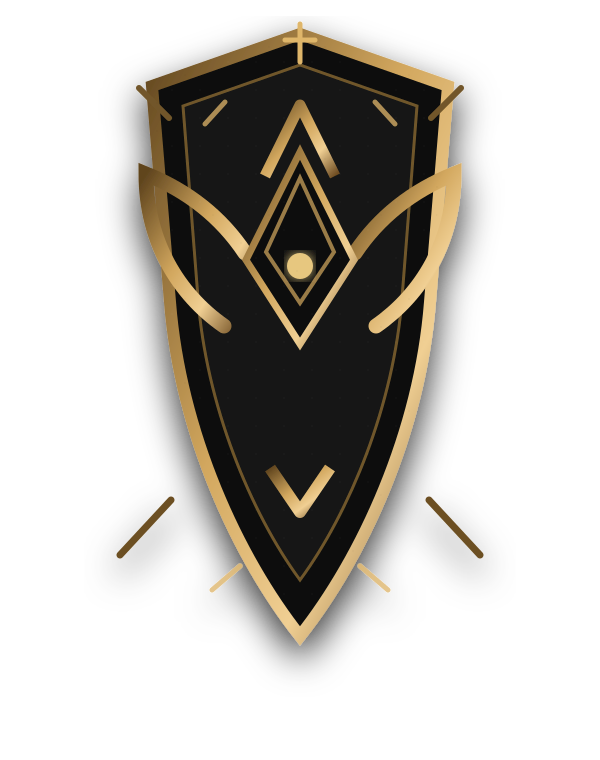

Цветовая система
#0B0C0F · BG-0
#121316 · BG-1
#1B1C20 · BG-2
#2A2620 · BG-3
#C89B3C · GOLD
#E0B86A · GOLD LIGHT
#8B6D3A · BRONZE
#8A1E1E · ERROR

Базовый набор не трогает существующие классы проекта. Все новые примитивы имеют префикс .cfk- и предназначены для последующей сборки страниц по референсу.
CLIPFENDER
ЭПИЧЕСКИЕ МОМЕНТЫ
Найди нужную сцену для будущего эдита
Тёмное средневековое пространство, внутри которого находится современный инструмент поиска.